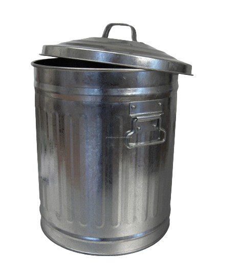
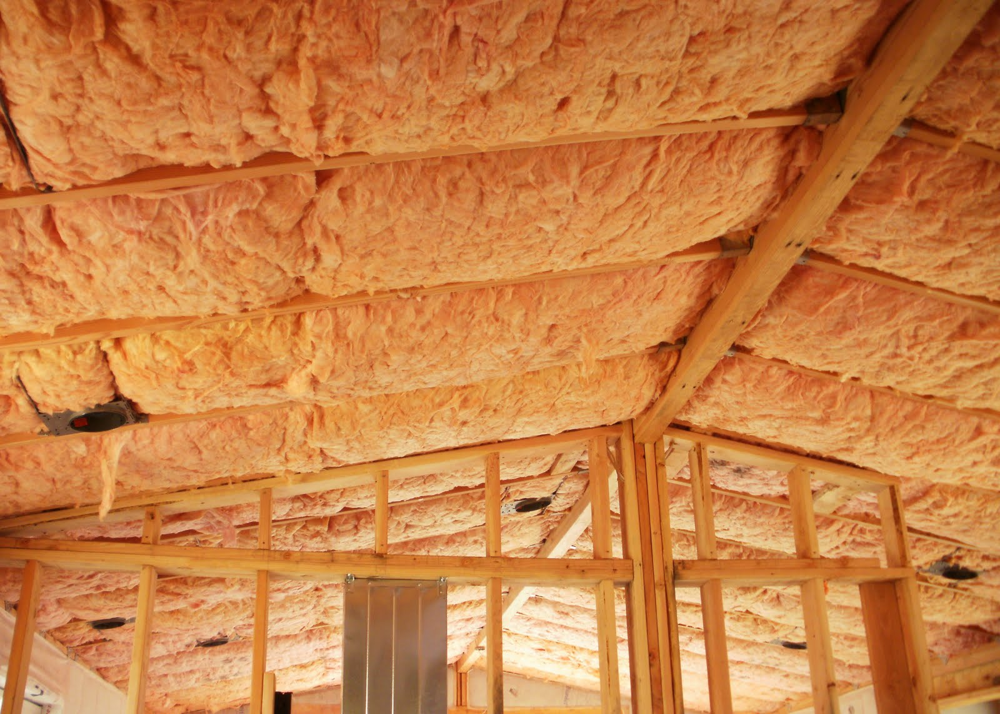
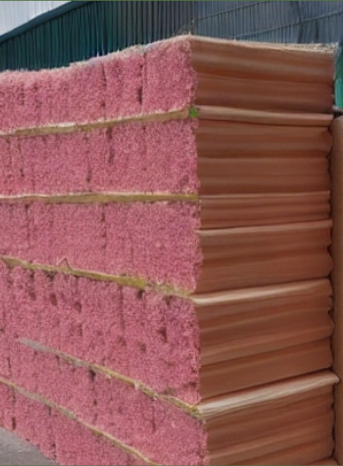
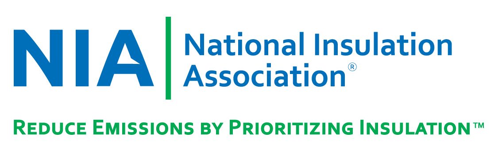

Tarbage - Garbage the Better Way

Did you know?
The issue of landfill pollution is a persistent global challenge. Physical landfills are not only reaching their maximum capacity but are also significantly contributing to environmental degradation. The accumulation of waste from resources like excess food and office supplies, is a growing concern. As of 2021, 900 million tonnes of food waste was recorded to be discarded annually. Projections indicate that by 2050, global waste could escalate to 3.40 billion tonnes.
A third of the world’s waste originates from developed countries. However, developing countries, with 90% mismanagement of waste, contribute significantly to air and land emissions which negatively impacts our biodiversity. This waste degrades soil fertility, rendering land unfit for crop production. Unregulated waste can also facilitate the spread of infectious diseases and pose a threat to wildlife.
As of 2019, our oceans were home to 5.25 trillion pieces of waste. Non-biodegradable waste, such as plastic, is particularly harmful as it contains high levels of toxic metals like copper or lead. These hazardous materials are often found in populated areas and pose a risk of contaminating our water supply and oceans. If we continue with our current waste management strategies, we risk transforming our planet into a garbage dump, making it uninhabitable. So what do we do with all this garbage?
We Tarbage!
We are re-purposing the way we look at garbage by turning it into Insulation. Our goal is to minimise waste pollution and enhance the overall safety of living space. Our product is designed to be accessible, suitable for all types of housing, and contributes to both short and long-term sustainability goals.By sterilising, shredding and compacting garbage, Our goal goes beyond waste management; it actively contributes to environmental safety.
We represent a groundbreaking approach to recycling, transforming waste materials, especially non-recyclable items like plastic packaging, into insulation for homes. We present a sustainable solution eco-friendly insulation alternative with added value through features like air filters and natural deodorizers to keep Tarbage smelling fresh and clean. We hope to address waste-management issues to ensure our planet is healthy.
 
Tarbage has partnered with Ideal Insulation and Roofing to offer our product as one of their insulation options for customers to choose from. In addition, we have joined forces with the National Insulation Association (NIA), a not-for-profit trade association that provides us with insulation accessories and components for our market. NAIMA Canada is another one of our partners that shares our vision to enhance environmental sustainability through the use of insulation. They encourage the safe production and installation of insulation materials, and support improved comfort for occupants throughout the lifetime of a home or building. NAIMA has also provided our employees with free professional training. Furthermore, we have a team of 230 volunteers who have signed up to help bring garbage to our collection facilities, which will further enrich our business.
Feel free to get in touch with us!
Email: info@tarbage.com
Address: 123 Trash Lane, Garbage City